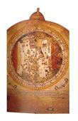
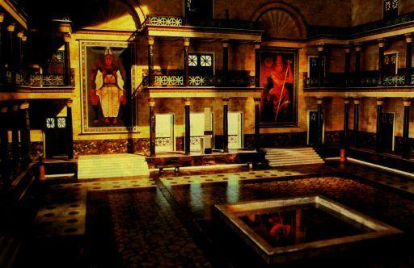
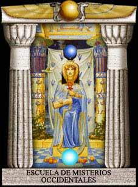

|
LA BIBLIOTECA DE ALEJANDRIA |

La ciudad de Alejandría fue fundada a finales del Siglo IV antes de Cristo
por Alejandro de Macedonia, un joven que fue discípulo de Aristóteles,
que a los 16 años ya comandaba los ejércitos de su padre -el rey
Filipo- y que dormía, según es fama, con un puñal y un
ejemplar de la ‘Ilíada’ bajo la almohada. Sus arquitectos diseñaron
la ciudad con trazos regios porque debía ser la capital del vasto imperio
que bullía en la cabeza del joven macedonio.
En efecto, Alejandro conquistó Grecia, Egipto, Persia, Mesopotamia
y la India, y Alejandría fue el centro político, comercial y cultural
del mundo. A su muerte, acaecida en Babilonia a los 33 años de edad,
los Ptolomeos, una dinastía
de faraones de origen griego, heredó la parte egipcia del imperio y la
rigió durante varios siglos.
Ptolomeo I Soter mandó a construir
un complejo arquitectónico que sería la sede de la más
soberbia empresa cultural de la Antigüedad: la Biblioteca de Alejandría.
Ptolomeo II Filadelfo contrató a las mejores mentes de Grecia y Egipto
para que se pusieran al frente de una especie de centros de investigación.
Luego fueron llegando, atraídos por el prestigio creciente de la biblioteca,
sabios de Roma, Persia, Arabia y la India. Ptolomeo III Evergetes amaba un objeto
raro, el libro, y dedicó su vida a enriquecer la colección alejandrina.
Adquirió la biblioteca de Aristóteles, y organizó equipos
de eruditos y ejércitos de escribas para que ordenaran y reprodujeran
los libros sagrados, la historia de las naciones, los manuales de los oficios
-que estaban en verso-, las leyendas de los pueblos y los poemas heroicos.
Sus emisarios viajaban por el mundo comprando libros y contratando sabios. Los
barcos que atracaban en los puertos egipcios eran revisados cuidadosamente,
pero no en busca de contrabando sino de libros -que eran confiscados y enviados
a la biblioteca.
Cleopatra, que era también una Ptolomeo, agregó al complejo una
colección de arte compuesta por cuadros, esculturas, jarrones, joyas
y tapices de Asia y Africa, una antología de la plástica del mundo
conocido.
La construcción ocupaba un área de 64 mil metros cuadrados. Los
edificios estaban separados por fuentes y jardines. En el centro del complejo
había una plazoleta en cuyo centro se levantaba un obelisco cónico
de granito rojo de 32 metros de altura y 2,5 metros de diámetro en la
base. Los sabios de la biblioteca Si nos atenemos a San Isidoro, la biblioteca
llegó a tener 60 mil volúmenes; según Victor Hugo 200 mil;
la cifra de la Enciclopedia Espasa-Calpe es 700 mil, y un millón si le
creemos a Carl Sagan.
La colección alejandrina no cesa de crecer. Se preservaron las obras
clásicas y se tradujeron los códices religiosos; pero además
se patrocinó la investigación científica, y la información
resultante fue codificada en áreas claramente delimitadas. Repasemos
algunos de los trabajos que allí se realizaron. Euclides, uno de sus
primeros directores, compiló todo lo que se sabía entonces de
geometría plana, y ordenó esa maraña en un espléndido
orden axiomático, quizá el conjunto teórico más
claro, económico, bello, útil y consistente de la historia de
la ciencia. Apolonio de Pérgamo codificó las curvas cónicas
y desarrolló el tema hasta casi agotarlo.
Es muy poco lo que los geómetras posteriores han podido agregar a lo
que él enseñó sobre la elipse, la hipérbola y la
parábola. Herón de Alejandría construyó juguetes
mecánicos y engranajes movidos a vapor, y escribió ‘Autómata’,
la primera obra sobre robots. De la mano de Hipatia, Plotino asistió
a las clases de Ammonio Saccas y formuló el Neoplatonismo. Arquímedes
de Siracusa sentó las bases de la Estática y escribió un
libro sobre la flotación de los cuerpos inspirado en el problema de la
corona del rey Herón.
El geógrafo y astrónomo Claudio Ptolomeo dibujó el mapa
de la tierra conocida y concibió el modelo geocéntrico del mundo,
concepción que rigió la astronomía hasta el Siglo XVI.
Compiló también buena parte de lo que hoy es una pseudociencia
en la que no creemos pero cuyos oráculos leemos cumplidamente en los
periódicos: la astrología. Usando aritmética elemental
y la sombra de una vara en la arena, Eratóstenes calculó la medida
de la circunferencia del planeta. Aristarco de Samos propuso un modelo heliocéntrico
del sistema solar, pero su propuesta cayó en el vacío ante el
peso de la autoridad de Claudio Ptolomeo -que defendía el modelo geocéntrico.
Herófilo de Calcedonia sorprendió a la comunidad alejandrina al
afirmar que era el cerebro, y no el corazón, el órgano que presidía
la formación del pensamiento. Dionisio y Aristarco de Tracia definieron
las partes del discurso y escribieron la primera gramática.
Fueron ellos quienes dividieron la ‘Ilíada’ en cantos e inventaron,
adivinando la respiración de Homero, los signos de puntuación.
Una comisión de 72 sabios judíos -exégetas, teólogos,
historiadores y polígrafos- se aplicó durante nueve años
a la traducción crítica de la Biblia hebrea al griego. Siguieron
el rastro de los esenios, escucharon la voz de las tradiciones orales, separaron
en las Escrituras los libros inspirados de los apócrifos y cazaron con
lupa los versículos espurios hasta conseguir una versión ortodoxa
del Antiguo Testamento. El resultado se conoce como la ‘Biblia griega de
los setenta’.
Los bárbaros La biblioteca
sufrió dos golpes de fuego.
El primero vino de Occidente: las legiones del Águila se enfrentaron
a los guerreros de Cleopatra en las calles de Alejandría. En maniobra
detractora, los romanos incendiaron sus propias naves pero el fuego se extendió
a la biblioteca, que estaba cerca del muelle. Ardieron miles de volúmenes
y objetos de arte. En medio de la conflagración -imagina Bernard Shaw
en su ‘César y Cleopatra’- Teodoto, tutor de Ptolomeo Dionisio,
el pequeño Faraón, corrió a avisarle al Emperador de Roma:
“¡César -le dijo-, está ardiendo la memoria de la humanidad!”.
Viejo y desencantado, harto de glorias y traiciones, Julio César lo miró
desde la cima de sus 54 años: “Déjala que arda, es una memoria
de infamias”. Para consolar a Cleopatra, Marco Antonio le regaló
la Biblioteca de Pérgamo (cuyos libros estaban escritos por vez primera
en pergamino) y Augusto la indemnizó con 200 mil volúmenes de
la biblioteca del Capitolio.
El segundo golpe vino de Oriente. En el Siglo VII los ejércitos del Islam
entraron a saco en Alejandría. Omar entró a la biblioteca, recorrió
los pasillos formados por los atiborrados estantes, vio con ojos de animal los
rollos y los instrumentos, y ordenó prender fuego al edificio. Era el
Califa -sucesor de Mahoma- y uno de los hombres más poderosos del mundo,
pero no sabía leer. Sus oficiales protestaron la orden -la civilización
musulmana era, a la fecha, la más adelantada del mundo-. Omar los desarmó
con un dilema brillante: “Si el contenido de estos libros -dijo- difiere
del Corán, estos libros son falsos; si coincide, son superfluos”.
¿Qué se perdió en el incendio de la Biblioteca de Alejandría?
Los historiadores de la ciencia estiman
que el hecho atrasó en varios siglos el desarrollo del conocimiento.
Personalmente, creo que nos hemos desatrasado más de la cuenta. Si miramos
el panorama actual advertimos que lo único que nos sobra es ciencia.
Los niveles alcanzados por la física, la informática y la biología,
para no citar otras áreas, es por lo menos inquietante. Las humanidades,
en cambio, aún no se reponen de la catástrofe.
Quizá se perdió allí una fórmula política
magistral, el gobierno perfecto que aún buscamos en vano en la barraca,
el burgo, el feudo, la comuna y la metrópoli; en los libros de Platón
y de Marx; en la erección de un muro o en su destrucción; en las
tesis neoliberales o en la terca mansedumbre de las religiones; quizá
perdimos una clave de la botánica que nos hubiera permitido interactuar
de manera armónica con la naturaleza; una cifra filosófica, un
método que nos librara del laberinto; quizá lo que se perdió
allí fue la ética de la especie, una actitud noble ante el otro;
o un verso, la línea capaz de dibujar una sonrisa en los labios de Dios.
G
Por
Julio César Londoño, especial para GACETA
Fue en Alejandría, durante los seiscientos años que se iniciaron hacia el 300 a. de C., cuando los seres humanos emprendieron, en un sentido básico, la aventura intelectual que nos ha llevado a las orillas del espacio. Pero no queda nada del paisaje y de las sensaciones de aquella gloriosa ciudad de mármol. La opresión y el miedo al saber han arrasado casi todos los recuerdos de la antigua Alejandría. Su población tenía una maravillosa diversidad. Soldados macedonios y más tarde romanos, sacerdotes egipcios, aristócratas griegos, marineros fenicios, mercaderes judíos, visitantes de la India y del África subsahariana —todos ellos, excepto la vasta población de esclavos— vivían juntos en armonía y respeto mutuo durante la mayor parte del período que marca la grandeza de Alejandría.
La ciudad fue fundada por Alejandro Magno y construida por su antigua guardia personal. Alejandro estimuló el respeto por las culturas extrañas y una búsqueda sin prejuicios del conocimiento. Según la tradición —y no nos importa mucho que esto fuera o no cierto— se sumergió debajo del mar Rojo en la primera campana de inmersión del mundo. Animó a sus generales y soldados a que se casaran con mujeres persas e indias. Respetaba los dioses de las demás naciones. Coleccionó formas de vida exóticas, entre ellas un elefante destinado a su maestro Aristóteles. Su ciudad estaba construida a una escala suntuosa, porque tenía que ser el centro mundial del comercio, de la cultura y del saber. Estaba adornada con amplias avenidas de treinta metros de ancho, con una arquitectura y una estatuaria elegante, con la tumba monumental de Alejandro y con un enorme faro, el Faros, una de las siete maravillas del mundo antiguo.
Pero la maravilla mayor de Alejandría era su biblioteca y su correspondiente museo (en sentido literal, una institución dedicada a las especialidades de las Nueve Musas). De esta biblioteca legendaria lo máximo que sobrevive hoy en día es un sótano húmedo y olvidado del Serapeo, el anexo de la biblioteca, primitivamente un templo que fue reconsagrado al conocimiento. Unos pocos estantes enmohecidos pueden ser sus únicos restos físicos. Sin embargo, este lugar fue en su época el cerebro y la gloria de la mayor ciudad del planeta, el primer auténtico instituto de investigación de la historia del mundo. Los eruditos de la biblioteca estudiaban el Cosmos entero. Cosmos es una palabra griega que significa el orden del universo. Es en cierto modo lo opuesto a Caos. Presupone el carácter profundamente interrelacionado de todas las cosas. Inspira admiración ante la intrincada y sutil construcción del universo. Había en la biblioteca una comunidad de eruditos que exploraban la física, la literatura, la medicina, la astronomía, la geografía, la filosofía, las matemáticas, la biología y la ingeniería. La ciencia y la erudición habían llegado a su edad adulta. El genio florecía en aquellas salas.
La Biblioteca de Alejandría es el lugar donde los hombres reunieron por primera vez de modo serio y sistemático el conocimiento del mundo.

La Gran Sala de la antigua
Biblioteca de Alejandría en Egipto. Reconstrucción basada en datos
documentales
Además de Eratóstenes, hubo el astrónomo Hiparco, que ordenó el mapa de las constelaciones y estimó el brillo de las estrellas; Euclides, que sistematizó de modo brillante la geometría y que en cierta ocasión dijo a su rey, que luchaba con un difícil problema matemático: "no hay un camino real hacia la geometría"; Dionisio de Tracia, el hombre que definió las partes del discurso y que hizo en el estudio del lenguaje lo que Euclides hizo en la geometría; Herófilo, el fisiólogo que estableció, de modo seguro, que es el cerebro y no el corazón la sede de la inteligencia; Herón de Alejandría, inventor de cajas de engranajes y de aparatos de vapor, y autor de Autómata, la primera obra sobre robots; Apolonio de Pérgamo. el matemático que demostró las formas de las secciones cónicas (1) —elipse, parábola e hipérbola—, las curvas que como sabemos actualmente siguen en sus órbitas los planetas, los cometas y las estrellas; Arquímedes, el mayor genio mecánico hasta Leonardo de Vinci; y el astrónomo y geógrafo Tolomeo, que compiló gran parte de lo que es hoy la seudociencia de la astrología: su universo centrado en la Tierra estuvo en boga durante 1500 años, lo que nos recuerda que la capacidad intelectual no constituye una garantía contra los yerros descomunales. Y entre estos grandes hombres hubo una gran mujer, Hipatia, matemática y astrónoma, la última lumbrera de la biblioteca, cuyo martirio estuvo ligado a la destrucción de la biblioteca siete siglos después de su fundación, historia a la cual volveremos.
Los reyes griegos de Egipto que sucedieron a Alejandro tenían ideas muy serias sobre el saber. Apoyaron durante siglos la investigación y mantuvieron la biblioteca para que ofreciera un ambiente adecuado de trabajo a las mejores mentes de la época. La biblioteca constaba de diez grandes salas de investigación, cada una dedicada a un tema distinto, había fuentes y columnatas jardines botánicos, un zoo, salas de disección, un observatorio, y una gran sala comedor donde se llevaban a cabo con toda libertad las discusiones críticas de las ideas.
El núcleo de la biblioteca era su colección de libros. Los organizadores escudriñaron todas las culturas y lenguajes del mundo. Enviaban agentes al exterior para comprar bibliotecas. Los buques de comercio que arribaban a Alejandría eran registrados por la policía, y no en busca de contrabando, sino de libros. Los rollos eran confiscados, copiados y devueltos luego a sus propietarios. Es difícil de estimar el número preciso de libros, pero parece probable que la biblioteca contuviera medio millón de volúmenes, cada uno de ellos un rollo de papiro escrito a mano. ¿Qué destino tuvieron todos estos libros? La civilización clásica que los creó acabó desintegrándose y la biblioteca fue destruida deliberadamente. Sólo sobrevivió una pequeña fracción de sus obras junto con unos pocos y patéticos fragmentos dispersos. Y qué tentadores son estos restos y fragmentos. Sabemos por ejemplo que en los estantes de la biblioteca había una obra del astrónomo Aristarco de Samos quien sostenía que la Tierra es uno de los planetas, que orbita el Sol como ellos, y que las estrellas están a una enorme distancia de nosotros. Cada una de estas conclusiones es totalmente correcta, pero tuvimos que esperar casi dos mil años para redescubrirlas. Si multiplicamos por cien mil nuestra sensación de privación por la pérdida de esta obra de Aristarco empezaremos a apreciar la grandeza de los logros de la civilización clásica y la tragedia de su destrucción.
Los libros perdidos de Aristarco, tal como podían estar guardados en los estantes de la Biblioteca de Alejandría
Hemos superado en mucho la ciencia que el mundo antiguo conocía, pero hay lagunas irreparables en nuestros conocimientos históricos. Imaginemos los misterios que podríamos resolver sobre nuestro pasado si dispusiéramos de una tarjeta de lector para la Biblioteca de Alejandría. Sabemos que había una historia del mundo en tres volúmenes, perdida actualmente, de un sacerdote babilonio llamado Beroso.
El primer volumen se ocupaba del intervalo desde la Creación hasta el Diluvio un período al cual atribuyó una duración de 432.000 años, es decir cien veces más que la cronología del Antiguo Testamento. Me pregunto cuál era su contenido. (pp. 18-20)
------------
Sólo en un punto de la historia pasada hubo la promesa de una civilización científica brillante. Era beneficiaria del Despertar jónico, y tenía su ciudadela en la Biblioteca de Alejandría, donde hace 2.000 años las mejores mentes de la antigüedad establecieron las bases del estudio sistemático de la matemática, la física, la biología, la astronomía, la literatura, la geografía y la medicina. Todavía estamos construyendo sobre estas bases. La Biblioteca fue construida y sostenida por los Tolomeos, los reyes griegos que heredaron la porción egipcia del imperio de Alejandro Magno. Desde la época de su creación en el siglo tercero a. de C. hasta su destrucción siete siglos más tarde, fue el cerebro y el corazón del mundo antiguo.
Alejandría
era la capital editorial del planeta. Como es lógico no había
entonces prensas de imprimir. Los libros eran caros, cada uno se copiaba a mano.
La Biblioteca era depositaria de las copias más exactas del mundo. El
arte de la edición crítica se inventó allí. El Antiguo
Testamento ha llegado hasta nosotros principalmente a través de las traducciones
griegas hechas en la Biblioteca de Alejandría. Los Tolomeos dedicaron
gran parte de su enorme riqueza a la adquisición de todos los libros
griegos, y de obras de África, Persia, la India, Israel y otras partes
del mundo. Tolomeo III Evergetes quiso que Atenas le dejara prestados los manuscritos
originales o las copias oficiales de Estado de las grandes tragedias antiguas
de Sófocles, Esquilo y Eurípides. Estos libros eran para los atenienses
una especie de patrimonio cultural; algo parecido a las copias manuscritas originales
y a los primeros folios de Shakespeare en Inglaterra. No estaban muy dispuestos
a dejar salir de sus manos ni por un momento aquellos manuscritos. Sólo
aceptaron dejar en préstamo las obras cuando Tolomeo hubo garantizado
su devolución con un enorme depósito de dinero. Pero Tolomeo valoraba
estos rollos más que el oro o la plata. Renunció alegremente al
depósito y encerró del mejor modo que pudo los originales en la
Biblioteca. Los irritados atenienses tuvieron que contentarse con las copias
que Tolomeo, un poco avergonzado, no mucho, les regaló. En raras ocasiones
un Estado ha apoyado con tanta avidez la búsqueda del conocimiento.
Los Tolomeos no se limitaron a recoger el conocimiento conocido, sino que animaron y financiaron la investigación científica y de este modo generaron nuevos conocimientos. Los resultados fueron asombrosos: Eratóstenes calculó con precisión el tamaño de la Tierra, la cartografió, y afirmó que se podía llegar a la India navegando hacia el oeste desde España. Hiparco anticipó que las estrellas nacen, se desplazan lentamente en el transcurso de los siglos y al final perecen; fue el primero en catalogar las posiciones y magnitudes de las estrellas y en detectar estos cambios.
Euclides creó un texto de geometría del cual los hombres aprendieron durante veintitrés siglos, una obra que ayudaría a despertar el interés de la ciencia en Kepler, Newton y Einstein. Galeno escribió obras básicas sobre el arte de curar y la anatomía que dominaron la medicina hasta el Renacimiento. Hubo también, como hemos dicho, muchos más.
Alejandria era la mayor ciudad que el mundo occidental había visto jamás. Gente de todas las naciones llegaban allí para vivir, comerciar, aprender. En un día cualquiera sus puertos estaban atiborrados de mercaderes, estudiosos y turistas. Era una ciudad donde griegos, egipcios, árabes, sirios, hebreos, persas, nubios, fenicios, italianos, galos e íberos intercambiaban mercancías e ideas. Fue probablemente allí donde la palabra cosmopolita consiguió tener un sentido auténtico: ciudadano, no de una sola nación, sino del Cosmos (2). Ser un ciudadano del Cosmos...
Es evidente que allí estaban las semillas del mundo moderno. ¿Qué impidió que arraigaran y florecieran? ¿A qué se debe que Occidente se adormeciera durante mil años de tinieblas hasta que No puedo daros una respuesta e alguno de los ilustres científicos y estudiosos llegara nunca a desafiar seriamente los supuestos políticos, económicos y religiosos de su esclavitud. La ciencia y la cultura en general estaban reservadas para unos cuantos privilegiados. La vasta población de la ciudad no tenía la menor idea de los grandes descubrimientos que tenían lugar dentro de la Biblioteca. Los nuevos descubrimientos no fueron explicados ni popularizados. La investigación les benefició poco. Los descubrimientos en mecánica y en la tecnología del vapor se aplicaron principalmente a perfeccionar las armas, a estimular la superstición, a divertir a los reyes. Los científicos nunca captaron el potencial de las máquinas para liberar a la gente (3) Los grandes logros intelectuales de la antigüedad tuvieron pocas aplicaciones de la multitud. No hubo contrapeso al estancamiento, al pesimismo cuando al final de todo, la chusma se presentó para quemar la Biblioteca no había nadie capaz de detenerla.
"Cosmos", de Carl Sagán, pag.333/335
El último científico que trabajó en la Biblioteca fue una matemática, astrónoma, física y jefe de la escuela neoplatónica de filosofía: un extraordinario conjunto de logros para cualquier individuo de cualquier época. Su nombre era Hipatia. Nació en el año 370 en Alejandría. Hipatia, en una época en la que las mujeres disponían de pocas opciones y eran tratadas como objetos en propiedad, se movió libremente y sin afectación por los dominios tradicionalmente masculinos. Todas las historias dicen que era una gran belleza. Tuvo muchos pretendientes pero rechazó todas las proposiciones matrimoniales. La Alejandría de la época de Hipatia —bajo dominio romano desde hacía ya tiempo— era una ciudad que sufría graves tensiones. La esclavitud había agotado la vitalidad de la civilización clásica. La creciente Iglesia cristiana estaba consolidando su poder e intentando extirpar la influencia y la cultura paganas. Hipatia estaba sobre el epicentro de estas poderosas fuerzas sociales. Cirilo, el arzobispo de Alejandría, la despreciaba por la estrecha amistad que ella mantenía con el gobernador romano y porque era un símbolo de cultura y de ciencia, que la primitiva Iglesia identificaba en gran parte con el paganismo. A pesar del grave riesgo personal que ello suponía, continuó enseñando y publicando, hasta que en el año 415, cuando iba a trabajar, cayó en manos de una turba fanática de feligreses de Cirilo. La arrancaron del carruaje, rompieron sus vestidos y, armados con conchas marinas, la desollaron arrancándole la carne de los huesos. Sus restos fueron quemados, sus obras destruidas, su nombre olvidado. Cirilo fue proclamado santo.
1. Llamadas así porque pueden obtenerse cortando un cono en diferentes ángulos. Dieciocho siglos mas tarde Johannes Kepler utilizaría los escritos de Apolonio sobre las secciones cónicas para comprender por primera vez el movimiento de los planetas.
2. La palabra cosmopolita fue inventada por Diógenes, el filósofo racionalista y crítico de Platón.
3. Con la única excepción de Arquímedes, quien durante su estancia en la Biblioteca alejandrina inventó el tornillo de agua, que se usa todavía hoy en Egipto para regar los campos de cultivo. Pero también él consideró estos aparatos mecánicos como algo muy por debajo de la dignidad de la ciencia.
J.
Tomás Nogales
(nogales@bib.uc3m.es)
- Universidad Carlos III de Madrid
Creación: 22/01/1997 -
Última actualización: 28/06/2002
|
|
 |
|
|
La
ciudad de Alejandría fue fundada en el año 332 A.C. Por
Alejandro el Grande y su símbolo fue una de las siete maravillas
del mundo: El Faro de Alejandría. |